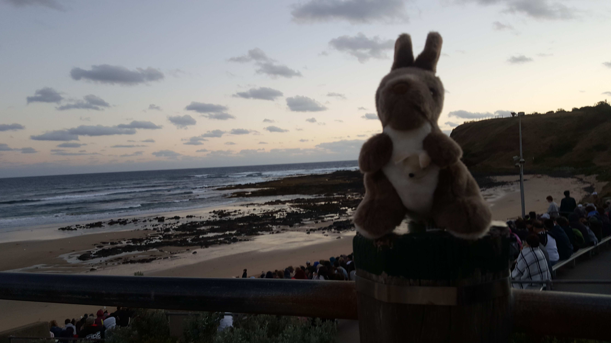

2019.01.08-12 MELBOURNE
About MELBOURNE
오스트레일리아 남동부 해안에 있는 항구 도시이다. 오스트레일리아 제2의 도시이며 빅토리아 주의 주도이다.
1835년 태즈메이니아 섬으로부터 이민자들이 상륙하여 건설한 도시로 1927년까지 연방 수도였다. 원주민들은 도타갈라(Doutta-Galla)라고 했는데, 현재의 지명은 1837년 빅토리아 여왕 시대의 초대 수상인 멜버른을 기념하여 붙인 것이다. 양모를 비롯한 밀, 밀가루, 피혁, 육류, 낙농 제품 등을 수출한다. 섬유·자동차·기계·화학 등의 공업이 발달하였다. 시내에는 로열 파크와 야라 파크 등의 공원과 녹지대가 있어 '숲의 도시'라고도 불린다.
멜버른은 호주 대륙의 남동부에 위치하고 있으며 대륙에서는 최남단에 위치한 빅토리아의 주도이다. 지리적으로 보면, 서쪽으로 네 개의 용암이 흘렀던 합류 지점에, 동쪽으로는 제4기 이암이, 포트 필립스를 따라서 남동쪽으로 홀로세 모래가 쌓인 합류지점에 건설되었다. 남동쪽 시외는 마사 산과 크레인본을 가로지르는 셀윈 단층 위에 자리잡고 있다.
멜버른은 야라를 따라 야라 계곡과 단데농 산맥 쪽으로 뻗어있으며, 동쪽으로는 야라 산맥으로 확장되어 있다. 북쪽으로는 야라 지류의 침수된 관목 계곡을 관통하고 있다.
– 3 –
Great Ocean Road_ 그레이트 오션로드
빅토리아주(州) 토키에서 워냄불까지 300㎞에 이르는 지역을 말하는데, 파도에 의해 침식된 바위들과 절벽, 그리고 굴곡이 있는 해안선으로 이루어져 있다. 그레이트 오션 로드는 크게 질롱오트웨이(Geelong Otway), 쉽렉 코스트(Shipwreck Coast), 디스커버리 코스트(Discovery Coast)로 나누어진다. 각 지역에는 서핑을 즐기기에 알맞은 해변과 자연의 아름다움을 보여주는 해안선 및 절벽들이 있어 관광객들을 끌고 있다.
쉽렉 코스트는 '난파선 해안'의 의미를 가지고 있듯이 약 80척이 넘는 난파선이 해저에 수장되어 있다고 한다. 이곳은 가장 유명한 관광명소로서, 유명한 12제자(예수 그리스도의 12제자를 의인화한 바위들의 이름)와 런던브리지바위(London Bridge Rock), 블로홀(Blowhole)과 같은 독특한 바위들이 있다. 멜버른에서 오전 일찍 출발해서 이른 저녁 돌아오는 1일 관광코스를 이용하거나 자동차 여행으로 여유 있게 관광할 수 있다.
– 4 –

Great Ocean Road
– 5 –
Yarra River_ 야라강
1835년 영국계 이주민들이 처음으로 정착한 곳으로 이때 '야라야라(Yarra Yarra)'라는 이름이 생겼다. 강 하류는 멜버른 중심지를 관통하여 남태평양으로 흐른다.
길이는 약 242㎞이고 연간 유수량은 71만 8,000 메가리터, 총 집수(集水) 지역은 약 4,000㎢이다. 강의 주요 지류는 플렌티강(Plenty R.), 메리 크릭(Merri Creek), 데어빈 크릭(Darebin Creek), 가디너스 크릭( Gardiners Creek) 등이다. 야라강 역시 메리비농강(Maribyrnong R.)의 한 지류였다.
개발되기 이전에는 철로와 기차역 등으로 강변으로 접근하기가 어려웠으나, 강변을 재개발하여 강의 남쪽과 북쪽을 연결하였고 사람들이 왕래할 수 있는 웨브브릿지(Webb Bridge)를 세우는 등 시민을 위한 공간으로 바뀌었다. 강변을 따라 고급호텔, 카지노, 레스토랑, 카페 등이 들어서 새로운 번화가를 형성하고 있으며 바다로 이어지는 강변과 해안가 도크랜드를 잇는 재정비사업도 추진되고 있다.
– 6 –


Yarra River
– 7 –
Phillip Island_필립아일랜드
필립섬은 오스트레일리아 빅토리아주의 섬이다. 멜버른 남동쪽에 위치하며 펭귄들의 서식지로서 코알라, 희귀조류, 바다표범, 페어리펭권 등을 볼 수 있다. 이곳에서는 매일 저녁마다 페어리펭귄들이 둥지로 찾아드는 일명 ‘펭귄 퍼레이드’를 볼 수 있다.
필립 아일랜드는 멜버른에서 3시간 정도 떨어진 섬이다. 육지와 다리로 이어져 있으며, 세상에서 가장 작은 펭귄인 페어리 펭귄의 서식지 및 서식 보호지로 유명하다.
– 8 –

Phillip Island
– 9 –
Dandenong Ranges National Park_ 단데농 국립공원
오스트레일리아 빅토리아주(州)에 있는 국립공원이다. 다양한 토착 동식물이 서식하고 있으며, 경치가 매우 아름답다.
오스트레일리아 빅토리아주(州)에 있다. 1987년에 셔브룩 숲, 둔갈라 보호구역, 펀트리 걸리 국립공원을 합쳐 단데농 산맥 국립공원을 만들었다. 1997년에는 올린다 주립공원과 마운트 에벌린 숲도 포함시켰다. 자연경관이 아름다워 1870년대부터 관광지로 유명하였다.

– 10 –
Dandenong Ranges National Park
– 11 –
Hosier Lane_ 호시어레인
플린더스 스트리트의 명물은 이제 ‘호시어 레인(hosier lane)’이 이어받았다. 드라마 [미안하다 사랑한다]를 통해 알려진 이 그래피티 골목은 한국에는 '미사 골목'으로 더욱 유명하다. 거리의 예술가들이 만들어낸 벽화 앞에서 독특한 포즈를 취하는 모습은 흔한 광경이다. 흥미로운 점은 무분별해 보이는 벽화에도 작가들의 사연과 약속이 담겨있다는 것. 실제로 그래피티의 속사정을 설명해주는 투어 프로그램이 따로 마련돼 있다.
어둠이 내리고 상점들이 문을 닫으면 골목들은 다시 그래피티로 단장되며 도시의 이면을 채색한다. 멜버른의 뒷골목에 화려한 네온사인은 굳이 필요 없다. 뉴요커들의 아지트처럼 멜버니언의 단골바들은 막다른 골목이나 허름한 1층 문을 지나 옥상에 보석처럼 숨어 있다.
– 12 –

Hosier Lane
– 13 –
Melbourne Royal Botanic Garden_ 로열 보태닉 가든
멜버른 왕립식물원은 1845년 문을 연 영국식 정원이다. 약 40만m2에 이르는 부지에 야라 강변과 호수, 푸른 잔디밭이 잘 어우러져 있다. 멜버른을 대표하는 식물원 중 하나로 꼽힌다.
세심하게 꾸민 식물원 안에는 50종이 넘는 야생조류와 1만2,000종에 이르는 식물을 볼 수 있다. 우림 식물들, 선인장, 캘리포니안종, 다육식물, 카밀리아, 허브, 다년생 식물은 물론 중국 등 아시아에서 들여온 다양하고 희귀한 종류의 식물들을 볼 수 있다. 매년 160만 명이 넘는 관광객들이 이곳을 찾는다고 알려졌다. 보호 식물들을 모아놓은 길포일 볼케이노(Guilfoyle's Volcano)도 눈길을 끈다. 더불어 방울새, 카카두, 쿠카부라, 흑조 등 호주에 서식하는 새와 야생동물도 함께 만나볼 수 있다.
멜버른 왕립식물원에서 가장 인기 있는 구역은 어린이 정원이다. 아이들이 직접 뛰어놀거나 숨바꼭질할 수 있는 바위와 작은 동굴, 넝쿨, 대나무 숲이 마련되어 있다. 산책로가 잘 가꾸어져 있어 여유롭게 돌아보기 좋다. 계절마다 야외 영화 상영이나 연극, 공연 등 여러 행사와 체험 프로그램이 열려 시민들의 사랑을 받고 있다.
– 14 –


Melbourne Royal Botanic Garden
– 15 –
오스트레일리아 남동부 해안에 있는 항구 도시. 오스트레일리아 제2의 도시이며 빅토리아 주의 주도이다. 1835년 태즈메이니아 섬으로부터 이민자들이 상륙하여 건설한 도시로 1927년까지 연방 수도였다. 원주민들은 도타갈라(Doutta-Galla)라고 했는데, 현재의 지명은 1837년 빅토리아 여왕 시대의 초대 수상인 멜버른을 기념하여 붙인 것이다. 양모를 비롯한 밀, 밀가루, 피혁, 육류, 낙농 제품 등을 수출한다. 섬유·자동차·기계·화학 등의 공업이 발달하였다. 시내에는 로열 파크와 야라 파크 등의 공원과 녹지대가 있어 '숲의 도시'라고도 불린다.